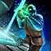
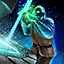
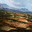
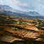
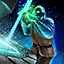
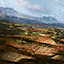

Guide to World vs World Fights
In depth guide about the fighting aspect of blobs in WvW
✖ Not yet updated to the current balance patch ✖
SECTIONS - CLICK TO AUTO SCROLL
■ UNDERSTANDING THE META CLASSES ■ SYNERGY BETWEEN CLASSES ■ DECISION MAKING ■ THE PLAYSTYLES ■ THE MELEE TRAIN ■ THE CASTERS ■ THE CALLS ■ FIGHTS WITHIN STRUCTURES ■ USEFUL LINKS
■ UNDERSTANDING THE META CLASSES ■ SYNERGY BETWEEN CLASSES ■ DECISION MAKING ■ THE PLAYSTYLES ■ THE MELEE TRAIN ■ THE CASTERS ■ THE CALLS ■ FIGHTS WITHIN STRUCTURES ■ USEFUL LINKS
UNDERSTANDING THE META CLASSES
Why are these classes the META? What do they do? What does each class bring to the group?
- [c=Firebrand]: provides heals, condition cleanse, boons and a strong revive utility. Provide [c=Stability], arguably the most important boon in the game, cleanse conditions and occasionally convert them to boons, provide strong heals for the group and share lots of vital boons such as [c=Swiftness], [c=Might] and [c=Vigor].
- [c=Spellbreaker]: melee damage, crowd control and boonstrip. Channel [s=WindsofDisenchantment] (bubble/dome/winds) on the enemy group.
- [c=Herald]: AoE spike damage, crowd control and boons support. AoE Spike Damage using Hammer: [s=CoalescenceofRuin], [s=PhaseSmash] on bombs, CC inside [s=WindsofDisenchantment] using [s=DroptheHammer]. [s=LegendaryDwarfStance] - [s=InspiringReinforcement] applies [c=Stability] to party, [s=RiteoftheGreatDwarf] applies 50% damage reduction to party members. [s=LegendaryDragonStance] - "Boon bot" stance, able to apply [c=Regeneration], [c=Fury], [c=Swiftness], [c=Might], [c=Protection] and [c=Superspeed] to party members, offensively can apply conditions and damage.
- [c=Scrapper]: healer, conditions cleanser and conversion, fast revives and [c=Stealth]. Great healing support for the group, grants [c=Superspeed] with the trait [t=KineticStabilizers] and revives quickly with the passive trait [t=FunctionGyro].
- [c=Scourge]: boons stripping and corrupting, AoE cleave damage and pressure, barrier support. Remove boons from the enemy via corrupts, converting them into conditions or removing them with strips. Big AoE damage with Shades [s=ManifestSandShade]. Shades F3 [s=SandCascade] and F5 [s=DesertShroud] along [s=SandFlare] give [c=Barrier] to your allies, meaning extra health and [c=Might] with the trait [t=AbrasiveGrit].
- [c=Mirage]: Support, crowd control, spike damage on target, [c=Stealth]. Provides [c=Stealth] for zergs using [s=Veil], CC in [c=Spellbreaker]'s [s=WindsofDisenchantment] with pulls from [s=TemporalCurtain] -> [s=IntotheVoid] and spike damage with greatsword.
- [c=Weaver]: AoE cleave damage, crowd control. Cleave AoE Damage on opponent zerg with [s=MeteorShower] and others, occasional CC.
- [c=Tempest]: healer, conditions cleanser, boons applier, reviver and immobilizes. Great active and passive healing for the group, the best set of AoE [c=Immobilize] in the game with [t=ElementalSurge] trait, and solid AoE conditions cleanses.
SYNERGY BETWEEN CLASSES
How do you setup a squad with these classes? How do you make them work together?
There is a definite pattern in the setup of the squad:
1. There aren't more than 5 players within the same party. The reason is simple: the vast majority of every skill, boon, condition etc. in the game affects a maximum of 5 targets.
2. There aren't more than 2 classes of the same specialization in a sole party.
3. There is a main [c=Stability] source in all of the parties which is also the main healer.
4. There is a main boon support and cleave in all of the parties.
5. There is a main source of barrier support and corrupts.
6. There is a second healing support in the majority of parties.
7. There is a filler class that can be raw damage dealer or support damage dealer.
To clarify: A class can be considered support even if it doesn't bring heals. For instance [c=Herald] brings support through its boon output, and mirage with its CC and [c=Stealth].
The points above in detail:
1. One [c=Firebrand] per party as main source of [c=Stability]. Provides additional support with heals and boons.
2. One [c=Herald] as main boon support and cleave with their facets and hammer damage.
3. One [c=Scourge] as main barrier support and corrupts.
4. One [c=Tempest]/[c=Scrapper]/second [c=Scourge] as additional support or extra damage.
5. One filler [c=Weaver]/[c=Spellbreaker]/[c=Mirage] as damage dealers and supports.
The main point is that all of the classes listed bring some form of support to the table while also filling other roles, something that other specializations can't do or don't do as well as these.
Boons available by direct application with this setup: [c=Aegis], [c=Fury], [c=Might], [c=Protection], [c=Regeneration], [c=Resistance], [c=Retaliation], [c=Stability], [c=Swiftness], [c=Vigor], [c=Quickness].
Boons available through conditions conversion: [c=Alacrity].
Example of how the squad composition should look like
Example of how the squad composition SHOULDN'T look like
DECISION MAKING
Decision making and learning to adapt to multiple situations in a fight is CRITICAL for a commander while they are leading.
BE FAST AND BE REACTIVE
Even the simplest calls (explained later on) like "veil" can be really effective with good decision making. Example: you as the commander calling for a veil to your left opens multiple possibilities. Take the veil and go right instead, enemies will put AoEs in front of it thinking of hitting you, but they don't. An option is to pull back resetting the start of the fight. Another option is to go straight through and push on the side of the enemy group or their frontline or even their range players clouding in multiple locations.
The position of a fight is another crucial part that can flip the outcome in an instant. You can take an uphill and have range pressure going on the enemy, they have a few options like pulling off and making you move to another spot, pushing uphill while being unable to properly cast on you, creating a choke point for you to spike as soon as they reach the top and many other possibilities.
As a commander you must learn to read the fight through its movement and adapt.
In the case of a bad movement from the enemy, you can punish it instantly with an adequate reaction time. In the case of the uphill push, if they commit to that while they're low on cooldowns and you're not, they will most likely lose. On the other hand, if you are on low cooldowns and they push uphill to you, you most likely will lose.
Understand where and when to shot call skills, timing is important. Bad calls of bubbles, wells, meteors, shades or others can result in a loss of a fight because you ran out of cooldowns.
Learn to know your squad, communicate with them, know what they're capable of, check your composition, adapt with different playstyles, react fast, play fast, kill even faster.
THE PLAYSTYLES
There are different ways to lead or organize a fight. Here are the 3 main (or most played) ways:
MELEE BALL: All squad members stack tightly and stay within 600 range or less of each other training down the enemy. Pros: Excellent sustain for all party members, stay close, easy to resurrect if one of your members goes down. Can counter a cloud formation with proper pulls and movement. Cons: Allows enemies to easily bomb your group, allowing them to apply a lot of pressure. Can be countered by a cloud formation if the sustain and movement is weak. PIRATESHIP: Very few frontliners in squad, mostly backliners and range classes that can cast from 900-1200 range. Pros: Provides a lot of damage, can keep distance, makes it easier for casters to run higher damage builds. Cons: Easy to be pushed, not enough frontliners to protect backliners, wipes quickly with lack of support. Pirateshipping can be the most boring of the playstyles, but it can be necessary when two groups that are fighting are very competent at the game and know that a push would be a guaranteed death. CLOUD FORMATION: The cloud, if organized properly, is the most annoying and frustrating blob to fight. The way it's achieved is by spreading the casters on all sides around the enemy blob, making it hard for them to localize damage on a single spot, even if your melee train is tight and they can self sustain and bait the damage off everyone else. When fighting a cloud you will receive random bombs from all sides, but often not a hard enough engage to down all players at once. The cloud will start to generate downstates of the people most on the sides, especially those tailing behind because they are the most vulnerable. To counter the cloud the sustain of your squad has to be quite good (unless the enemy damage is really weak), just like they are generating downstates from your sides, you have to do the same. To generate downstates you will need to start pulling people in groups with [c=Firebrands] [s=TomeofJustice] skill Chapter 3: Heated Rebuke and [c=Mirages] focus skill [s=TemporalCurtain] -> [s=IntotheVoid], those will group up a bunch of enemies that you are free to spike as [c=Scourge], [c=Weaver] or [c=Herald]. Usually this is not a very good approach to the fights but everything is based on the current situation of the squad composition, the general skill level, the servers you are fighting and where you are fighting. This option would be a last resort if the blob is really struggling with coordination.
MELEE BALL: All squad members stack tightly and stay within 600 range or less of each other training down the enemy. Pros: Excellent sustain for all party members, stay close, easy to resurrect if one of your members goes down. Can counter a cloud formation with proper pulls and movement. Cons: Allows enemies to easily bomb your group, allowing them to apply a lot of pressure. Can be countered by a cloud formation if the sustain and movement is weak. PIRATESHIP: Very few frontliners in squad, mostly backliners and range classes that can cast from 900-1200 range. Pros: Provides a lot of damage, can keep distance, makes it easier for casters to run higher damage builds. Cons: Easy to be pushed, not enough frontliners to protect backliners, wipes quickly with lack of support. Pirateshipping can be the most boring of the playstyles, but it can be necessary when two groups that are fighting are very competent at the game and know that a push would be a guaranteed death. CLOUD FORMATION: The cloud, if organized properly, is the most annoying and frustrating blob to fight. The way it's achieved is by spreading the casters on all sides around the enemy blob, making it hard for them to localize damage on a single spot, even if your melee train is tight and they can self sustain and bait the damage off everyone else. When fighting a cloud you will receive random bombs from all sides, but often not a hard enough engage to down all players at once. The cloud will start to generate downstates of the people most on the sides, especially those tailing behind because they are the most vulnerable. To counter the cloud the sustain of your squad has to be quite good (unless the enemy damage is really weak), just like they are generating downstates from your sides, you have to do the same. To generate downstates you will need to start pulling people in groups with [c=Firebrands] [s=TomeofJustice] skill Chapter 3: Heated Rebuke and [c=Mirages] focus skill [s=TemporalCurtain] -> [s=IntotheVoid], those will group up a bunch of enemies that you are free to spike as [c=Scourge], [c=Weaver] or [c=Herald]. Usually this is not a very good approach to the fights but everything is based on the current situation of the squad composition, the general skill level, the servers you are fighting and where you are fighting. This option would be a last resort if the blob is really struggling with coordination.
THE MELEE TRAIN
Classes: [c=Firebrands], [c=Spellbreakers], [c=Scrappers], [c=Tempests], [c=Heralds].
Position: Frontliners
Melee/Frontliners provide the support for the zerg. [c=Firebrands], [c=Scrappers], [c=Tempests] keep their party members safe, heal, provide boons, cleanse and convert conditions, tank the damage for the casters. [c=Heralds] provide additional boon uptime, [c=Spellbreakers] can handle the damage with their stances.
Watch your party health, watch their conditions, check their boons. As a healer keeping your eyes open for these things are fundamental.
Disable the grid view to make it easier to check on your party status. Enable thick health bars for your party and eventually squad.


THE CASTERS
Classes: [c=Weavers], [c=Scourges], [c=Heralds], [c=Mirages].
Position: Sidelines, mid-range and long-range.
Keep constant pressure on the enemy zerg with light AoE damage on short cooldowns, providing overall control of the fight, saving heavy AoE damage for cleave bombing.
Position yourself the best way to be effective based on the current situation of the fight, be reactive and be smart.
[c=Scourges] will use their  Staff low-cooldown marks to provide small pressure to keep the enemy zerg from pushing fully, [c=Weavers] will provide with [s=IceSpike], [s=LavaFont] and [c=Heralds] [s=CoalescenceofRuin].
All big cooldowns are held for [s=WindsofDisenchantment]. With successful bubbles being casted on top of the enemy, [c=Scourges] will bomb with Shades and their [s=WellofCorruption] and [s=WellofSuffering] corrupting additional boons. Placing them in front of their melee train in the direction towards they are moving will increase the chances of dealing the maximum corrupts and damage.
[c=Weavers] can CC with [s=FrozenGround], [s=StaticField] and [s=UnsteadGround] while also casting [s=MeteorShower] and [s=LavaFont] as additional cleave.
Additional CC is casted by [c=Heralds] with [s=DroptheHammer] and chain cleave with [s=CoalescenceofRuin] and [s=PhaseSmash].
Holding them within [s=WindsofDisenchantment] allows more boons to be stripped, preventing them from gaining additional ones applying more damage.
Staff low-cooldown marks to provide small pressure to keep the enemy zerg from pushing fully, [c=Weavers] will provide with [s=IceSpike], [s=LavaFont] and [c=Heralds] [s=CoalescenceofRuin].
All big cooldowns are held for [s=WindsofDisenchantment]. With successful bubbles being casted on top of the enemy, [c=Scourges] will bomb with Shades and their [s=WellofCorruption] and [s=WellofSuffering] corrupting additional boons. Placing them in front of their melee train in the direction towards they are moving will increase the chances of dealing the maximum corrupts and damage.
[c=Weavers] can CC with [s=FrozenGround], [s=StaticField] and [s=UnsteadGround] while also casting [s=MeteorShower] and [s=LavaFont] as additional cleave.
Additional CC is casted by [c=Heralds] with [s=DroptheHammer] and chain cleave with [s=CoalescenceofRuin] and [s=PhaseSmash].
Holding them within [s=WindsofDisenchantment] allows more boons to be stripped, preventing them from gaining additional ones applying more damage.
THE CALLS
What is the commander saying when speaking on TeamSpeak or Discord? Why should you pay attention to it?
Listening to the commander's calls is quite important, especially for newer players to WvW. These calls will give you directions and will show you that it's not just a spam of skills. Make sure to join Teamspeak/Discord whenever possible.
Here are some words you might hear while a commander is leading a fight:
SKILLS BUBBLE/DOME/WINDS: Spellbreakers' elite skill [s=WindsofDisenchantment] which removes boons from the enemy and prevents new ones from being applied. DWARF: [s=RiteoftheGreatDwarf] is the elite skill of [c=Heralds] that reduces the received damage of the allied party members affected by its effect. EMPOWER: [s=Empower] is the staff skill for firebrands used to stack might before the fight, a way to regroup with the tail of the group and heal your party members. HAMMER 3/5: Commander is asking their revenants to coordinate their hammer skills [s=PhaseSmash] and [s=DroptheHammer] to CC with knockdown and spike the enemy in an area. ILLUSION: [s=IllusionofLife] is a mesmer skill that can revive a player for a short period of time from range. LINE: CC skills like Line of Warding or Unstead Ground. METEOR: [s=MeteorShower] [c=Weavers] calling their biggest cleave skill to coordinate with the group. MI: [s=MercifulIntervention] is a [c=Guardian] skill that teleports you to a downed target to revive it for 20% of its health. PORTAL: [s=PortalEntre] from [c=Mesmer] to teleport players in a structure or elsewhere. Situational Sand Swell from [c=Scourges] to port uphill. PULL: Pulling is an important method to split some members of the enemy squad from their group in order to focus on them and get the kill. Fundamental pull skills are [c=Mesmer]'s [s=TemporalCurtain] -> [s=IntotheVoid] and [c=Firebrands] [s=TomeofJustice] skill #3 Chapter 3: Heated Rebuke. REFLECT: Protecting the squad from the enemy's projectiles with skills such as [c=Firebrands]' [s=TomeofCourage] skill #3 Chapter 3: Valiant Bulwark SHADE: For [c=Scourges] to cast [s=ManifestSandShade] and utilize their low cooldown ones or high ones depending on the commander's decision. STATIC: [s=StaticField] [c=Weavers] dealing CC to the enemy with an unlimited target cap skill. VEIL: [s=Veil] is a mesmer utility skill used to apply [c=Stealth] to the squad. This allows the squad to move without being seen and allows for a semi surprised attack on the enemy group. WELLS: For [c=Scourges] to cast [s=WellofCorruption] and [s=WellofSuffering]. BOONS, CONDITIONS & EFFECTS BOONS: [c=Aegis], [c=Alacrity], [c=Fury], [c=Might], [c=Protection], [c=Quickness], [c=Regeneration], [c=Resistance], [c=Retaliation], [c=Stability], [c=Swiftness], [c=Vigor]. CONDITIONS: [c=Bleeding], [c=Blinded], [c=Burning], [c=Chilled], [c=Confusion], [c=Crippled], [c=Fear], [c=Immobilize], [c=Poisoned], [c=Slow], [c=Taunt], [c=Torment], [c=Vulnerability], [c=Weakness]. CHILL: [c=Weavers] or [c=Tempests] dealing soft CC with skills that deal [c=Chilled] such as [s=FrozenGround]. CLEANSE: For your healers and supports to cleanse conditions from the commander or their party or squad. RESISTANCE: [c=Resistance] is a boon that negates any incoming condition damage. STAB/STABILITY: [c=Stability] is a boon that prevents you from getting hard CC. Every hard CC you get hit from will remove one stack of [c=Stability]. Soft CC doesn't affect the amount of stacks you have. STEALTH: [c=Stealth] is an effect granted by skills like [s=Veil] or [s=SneakGyro] which makes you invisible to the enemy for a small duration. Mounting will break the effect and walking through it while mounted will not grant any. SUPERSPEED: [c=Superspeed] is an effect granted by skills like [s=ChaoticRelease] which makes you go faster than standard Swiftness buff and enables faster engages/disengages. COMBOS AND COORDINATION BLAST: Blast Finisher skills on friendly AoE fields (waters, smoke, fire etc. fields) such as [s=HolyStrike]. BOMB: Big AoE spike Damage on the commanders call. Some commanders differentiate between the "Spike" and "Bomb" calls. CC: CC differentiates in "hard" and "soft". Most of the times the commander calls for hard CC skills. Hard CC disables the skill usage: [c=Daze], [c=Float], [c=Knockback], [c=Knockdown], [c=Launch], [c=Pull], [c=Sink], [c=Stun], [c=Fear], [c=Taunt]. Soft CC doesn't disable skill usage but makes the enemy attacks weaker or movement slower: [c=Blinded], [c=Chilled], [c=Crippled], [c=Immobilize], [c=Slow], [c=Weakness]. HEAL/HEALING: Call to heal the commander in case he ran out of cooldowns and is under pressure or general squad healing. MARKER (ON PERSON): Commander places a squad marker on an enemy wanting the squad to kill it or watch its movement. PRESSURE: Keeping the damage on the enemy without letting them get out of combat by range and forcing them to utilize important cooldowns. SPIKE: Some commanders differentiate the "Spike" and "Bomb" calls. Other than "Bomb", "Spike" is usually asking for smaller damage from skills with short cooldowns to generate the first few downstates. WATER: Firebrands or tempests placing water fields to blast for additional heals using skills such as [s=Geyser], [s=HealingRain] or [s=TomeofResolve] skill #4 Chapter 4: Shining River. SQUAD OR TARGET MOVEMENT CLEAVE: Dealing as much constant damage as possible in order to kill as many enemy players in downstate as possible and end the fight. DOWN: An enemy player that has gone into downstate or a call to resurrect someone of your group who is in downstate. ENGAGE/DISENGAGE: Commander is telling you to go into close melee range with the enemy (engage) or to pull out of a fight and regroup (disengage). INC: Enemy players incoming near you or a structure on the map. MARKER (ON GROUND): Commander places a squad marker where he wants the group to place the damage or other skills, move towards or pay attention to. PUSH: When the Melee train is pushing and everyone needs to stay in range of each other for heals to get through enemy bomb or catch the enemy as they retreat. RESS/REVIVE: Asking to revive the commander or a player, usually in difficult situations.
SKILLS BUBBLE/DOME/WINDS: Spellbreakers' elite skill [s=WindsofDisenchantment] which removes boons from the enemy and prevents new ones from being applied. DWARF: [s=RiteoftheGreatDwarf] is the elite skill of [c=Heralds] that reduces the received damage of the allied party members affected by its effect. EMPOWER: [s=Empower] is the staff skill for firebrands used to stack might before the fight, a way to regroup with the tail of the group and heal your party members. HAMMER 3/5: Commander is asking their revenants to coordinate their hammer skills [s=PhaseSmash] and [s=DroptheHammer] to CC with knockdown and spike the enemy in an area. ILLUSION: [s=IllusionofLife] is a mesmer skill that can revive a player for a short period of time from range. LINE: CC skills like Line of Warding or Unstead Ground. METEOR: [s=MeteorShower] [c=Weavers] calling their biggest cleave skill to coordinate with the group. MI: [s=MercifulIntervention] is a [c=Guardian] skill that teleports you to a downed target to revive it for 20% of its health. PORTAL: [s=PortalEntre] from [c=Mesmer] to teleport players in a structure or elsewhere. Situational Sand Swell from [c=Scourges] to port uphill. PULL: Pulling is an important method to split some members of the enemy squad from their group in order to focus on them and get the kill. Fundamental pull skills are [c=Mesmer]'s [s=TemporalCurtain] -> [s=IntotheVoid] and [c=Firebrands] [s=TomeofJustice] skill #3 Chapter 3: Heated Rebuke. REFLECT: Protecting the squad from the enemy's projectiles with skills such as [c=Firebrands]' [s=TomeofCourage] skill #3 Chapter 3: Valiant Bulwark SHADE: For [c=Scourges] to cast [s=ManifestSandShade] and utilize their low cooldown ones or high ones depending on the commander's decision. STATIC: [s=StaticField] [c=Weavers] dealing CC to the enemy with an unlimited target cap skill. VEIL: [s=Veil] is a mesmer utility skill used to apply [c=Stealth] to the squad. This allows the squad to move without being seen and allows for a semi surprised attack on the enemy group. WELLS: For [c=Scourges] to cast [s=WellofCorruption] and [s=WellofSuffering]. BOONS, CONDITIONS & EFFECTS BOONS: [c=Aegis], [c=Alacrity], [c=Fury], [c=Might], [c=Protection], [c=Quickness], [c=Regeneration], [c=Resistance], [c=Retaliation], [c=Stability], [c=Swiftness], [c=Vigor]. CONDITIONS: [c=Bleeding], [c=Blinded], [c=Burning], [c=Chilled], [c=Confusion], [c=Crippled], [c=Fear], [c=Immobilize], [c=Poisoned], [c=Slow], [c=Taunt], [c=Torment], [c=Vulnerability], [c=Weakness]. CHILL: [c=Weavers] or [c=Tempests] dealing soft CC with skills that deal [c=Chilled] such as [s=FrozenGround]. CLEANSE: For your healers and supports to cleanse conditions from the commander or their party or squad. RESISTANCE: [c=Resistance] is a boon that negates any incoming condition damage. STAB/STABILITY: [c=Stability] is a boon that prevents you from getting hard CC. Every hard CC you get hit from will remove one stack of [c=Stability]. Soft CC doesn't affect the amount of stacks you have. STEALTH: [c=Stealth] is an effect granted by skills like [s=Veil] or [s=SneakGyro] which makes you invisible to the enemy for a small duration. Mounting will break the effect and walking through it while mounted will not grant any. SUPERSPEED: [c=Superspeed] is an effect granted by skills like [s=ChaoticRelease] which makes you go faster than standard Swiftness buff and enables faster engages/disengages. COMBOS AND COORDINATION BLAST: Blast Finisher skills on friendly AoE fields (waters, smoke, fire etc. fields) such as [s=HolyStrike]. BOMB: Big AoE spike Damage on the commanders call. Some commanders differentiate between the "Spike" and "Bomb" calls. CC: CC differentiates in "hard" and "soft". Most of the times the commander calls for hard CC skills. Hard CC disables the skill usage: [c=Daze], [c=Float], [c=Knockback], [c=Knockdown], [c=Launch], [c=Pull], [c=Sink], [c=Stun], [c=Fear], [c=Taunt]. Soft CC doesn't disable skill usage but makes the enemy attacks weaker or movement slower: [c=Blinded], [c=Chilled], [c=Crippled], [c=Immobilize], [c=Slow], [c=Weakness]. HEAL/HEALING: Call to heal the commander in case he ran out of cooldowns and is under pressure or general squad healing. MARKER (ON PERSON): Commander places a squad marker on an enemy wanting the squad to kill it or watch its movement. PRESSURE: Keeping the damage on the enemy without letting them get out of combat by range and forcing them to utilize important cooldowns. SPIKE: Some commanders differentiate the "Spike" and "Bomb" calls. Other than "Bomb", "Spike" is usually asking for smaller damage from skills with short cooldowns to generate the first few downstates. WATER: Firebrands or tempests placing water fields to blast for additional heals using skills such as [s=Geyser], [s=HealingRain] or [s=TomeofResolve] skill #4 Chapter 4: Shining River. SQUAD OR TARGET MOVEMENT CLEAVE: Dealing as much constant damage as possible in order to kill as many enemy players in downstate as possible and end the fight. DOWN: An enemy player that has gone into downstate or a call to resurrect someone of your group who is in downstate. ENGAGE/DISENGAGE: Commander is telling you to go into close melee range with the enemy (engage) or to pull out of a fight and regroup (disengage). INC: Enemy players incoming near you or a structure on the map. MARKER (ON GROUND): Commander places a squad marker where he wants the group to place the damage or other skills, move towards or pay attention to. PUSH: When the Melee train is pushing and everyone needs to stay in range of each other for heals to get through enemy bomb or catch the enemy as they retreat. RESS/REVIVE: Asking to revive the commander or a player, usually in difficult situations.
FIGHTS WITHIN STRUCTURES
TACTICS AND IMPROVEMENTS
Some of the tactics and improvements within structures can affect a fight quite heavly, so it's best to have the knowledge about them.
 EMERGENCY WAYPOINT: Keeps and towers tactic, lasts 30 seconds. First time you teleport you will be fully vulnerable. In case of spawn camping from the enemy you will become invulnerable after death when taking it a second time.
 CLOAKING WATERS: Stonemist Castle's permanent improvement, walking through it grants 15 seconds of [c=Stealth].
Mounting breaks [c=Stealth] and walking in it while mounted won't grant any effect. The same is applies to any other [c=Stealth] effect by classes.
EMERGENCY WAYPOINT: Keeps and towers tactic, lasts 30 seconds. First time you teleport you will be fully vulnerable. In case of spawn camping from the enemy you will become invulnerable after death when taking it a second time.
 CLOAKING WATERS: Stonemist Castle's permanent improvement, walking through it grants 15 seconds of [c=Stealth].
Mounting breaks [c=Stealth] and walking in it while mounted won't grant any effect. The same is applies to any other [c=Stealth] effect by classes.
 CHILLING FOG: Any structure tactic, lasts 30 seconds. Pulses chill condition to every enemy in the structure. If you are affected by it, you can convert chill into alacrity and turn it into your advantage.
 WATCHTOWER: Towers' permanent improvement, will keep you revealed and you won't be able to [c=Stealth] for a long amount of time. The reveal ticks quite often.
CHILLING FOG: Any structure tactic, lasts 30 seconds. Pulses chill condition to every enemy in the structure. If you are affected by it, you can convert chill into alacrity and turn it into your advantage.
 WATCHTOWER: Towers' permanent improvement, will keep you revealed and you won't be able to [c=Stealth] for a long amount of time. The reveal ticks quite often.
 AIRSHIP DEFENSE: Stonemist Castle's improvement, lasts 3 minutes. Shoots AoEs that knock enemy around. Affects the entire area of Stonemist, lord room included.
CLAIMS
Claiming a structure with an upgraded guild hall grants permanent bonus attributes to the allied players within the area.
AIRSHIP DEFENSE: Stonemist Castle's improvement, lasts 3 minutes. Shoots AoEs that knock enemy around. Affects the entire area of Stonemist, lord room included.
CLAIMS
Claiming a structure with an upgraded guild hall grants permanent bonus attributes to the allied players within the area.
 PRESENCE OF THE KEEP: Doubles the amount of attributes granted by a guild claim. Available for keeps.
PRESENCE OF THE KEEP: Doubles the amount of attributes granted by a guild claim. Available for keeps.
EMERGENCY WAYPOINT: Keeps and towers tactic, lasts 30 seconds. First time you teleport you will be fully vulnerable. In case of spawn camping from the enemy you will become invulnerable after death when taking it a second time.
 CLOAKING WATERS: Stonemist Castle's permanent improvement, walking through it grants 15 seconds of [c=Stealth].
Mounting breaks [c=Stealth] and walking in it while mounted won't grant any effect. The same is applies to any other [c=Stealth] effect by classes.
CHILLING FOG: Any structure tactic, lasts 30 seconds. Pulses chill condition to every enemy in the structure. If you are affected by it, you can convert chill into alacrity and turn it into your advantage.
 WATCHTOWER: Towers' permanent improvement, will keep you revealed and you won't be able to [c=Stealth] for a long amount of time. The reveal ticks quite often.
AIRSHIP DEFENSE: Stonemist Castle's improvement, lasts 3 minutes. Shoots AoEs that knock enemy around. Affects the entire area of Stonemist, lord room included.
CLAIMS
Claiming a structure with an upgraded guild hall grants permanent bonus attributes to the allied players within the area.
PRESENCE OF THE KEEP: Doubles the amount of attributes granted by a guild claim. Available for keeps.
USEFUL LINKS
Here are some links that can help:
General WvW wiki
How servers and links work
Boons and conditions conversion table
ArcDPS
WvWstats matchups page
Gw2Timer WvW interactive page